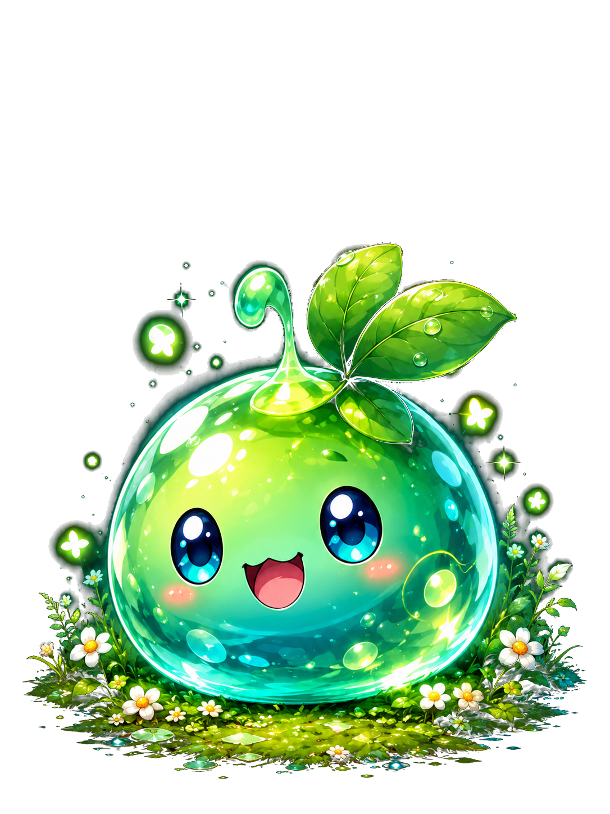

★
MONSTER
モンスターの記録。
MATH FANTASY ADVENTURE
計算で道をひらき、魔王を倒せ。
学習のめやす｜小学校1〜2年生中心

コレクション、モンスター図鑑、まちがいノート、世界の解放状況、BGM、各種記録などは、この端末のこのブラウザ内に自動保存されます。正常なセーブは復旧用として1世代だけ自動バックアップします。
現在のセーブ、自動バックアップ、破損時の退避データをこのブラウザからすべて削除します。
この操作は元に戻せません。
コレクション、モンスター図鑑、まちがいノート、世界の解放状況、BGM、記録などに加え、自動バックアップと破損時の退避データもすべて削除します。
現在のまちがいノートを空にします。
この操作は元に戻せません。ただし、同じ問題を今後もう一度間違えた場合は、まちがいノートへ再登録されます。
さんすうクエスト
GitHub RepositoryCopyright © 2026 NAOKI. Except as expressly permitted below, all rights reserved.
assets/ 以下を除く、本作品のソースコード、文章、UI構成その他の制作物を対象とします。assets/ 以下の画像、音楽、効果音その他の素材は、この利用許諾の対象外です。本表示は、それらの転載・再配布・流用を許可するものではありません。利用する場合は別途権利関係を確認してください。モンスターの記録。
